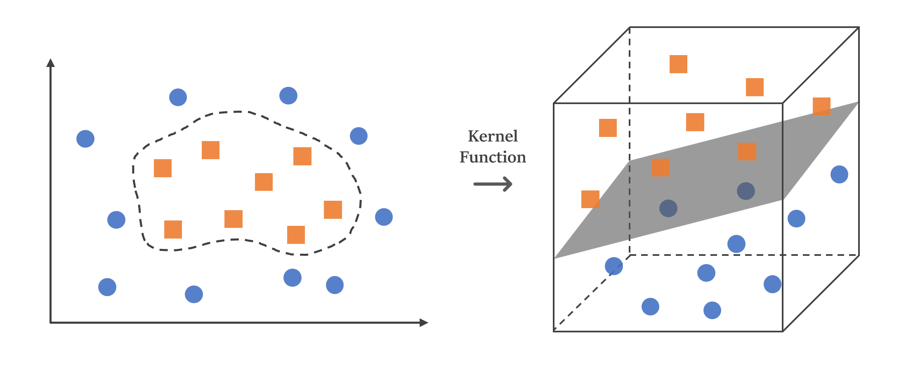

SVM
| Category | Machine Learning |
|---|---|
| References | References |
| Created | July 06, 2023 |
| Views |
什麼是SVM？
SVM的全名是支持向量機（Support Vector Machine），是一個監督式學習的演算法，透過統計的方式來找出一個超平面（Hyperplane），將資料中不同的類別分開，超平面旁邊會有兩條間隔超平面（虛線），目標讓這兩條間隔超平面與超平面的間隔（Margin）最大化，其中在間隔超平面裡面的就是可容許的誤差，而這些誤差就稱為支持向量（Support Vector）。

在使用SVM時，通常會有兩種情況，最理想的情況就是做到完美分類沒有任何誤差，也就是間隔中沒有任何樣本，這種情況就叫做Hard-Margin，但現實情況下，大部分的資料集都不太可能做到完美分類，所以我們會容許一些誤差值，讓間隔中存在一些樣本，這種情況就稱為Soft-Margin。
- Hard-Margin：完全沒有誤差值，間隔中沒有任何樣本。
- Soft-Margin：容許一些誤差值，讓間隔中存在一些樣本。

核函數
核函數（Kernel Function）是SVM中的一個重要概念，很多時候我們的資料沒辦法用一條線來分割出兩個類別，這時後就會使用核函數（Kernel Function）將低維度的資料映射到高維度的空間，讓我們能夠更好地分離不同類別的資料。

Cost
C值（Cost）是SVM演算法中的一個超參數，控制著模型的容錯能力，C值越小，模型的容錯能力越大，越容易出現過度擬合（Overfitting）的情況，C值越大，模型的容錯能力越小，越容易出現低偏差、高變異的情況。
SVM的優缺點
- 高效處理高維度資料：SVM使用核函數可以有效的處理高維度的資料，且具有較好的泛化能力。
- 可處理非線性問題：通過使用核函數，SVM能夠有效地處理非線性問題，將資料映射到高維度特徵空間進行分類。
- 依賴於支持向量：SVM僅依賴於支持向量，這意味著模型在訓練過程中只關注少數關鍵點，減少了計算成本和記憶體需求。
- 抗噪音性能強：SVM對於噪音和異常值具有較好的穩定性，可以避免過度擬合。
優點：
- 選擇適當的核函數和參數：選擇適合的核函數和超參數可能需要一些領域知識或試驗，對於某些問題可能需要進行多次嘗試和調整。
- 維度過高容易造成運算上的負擔：在處理維度較高的資料集時，SVM的計算成本和記憶體需求可能會較高。
- 解釋性較差：SVM提供的模型解釋性相對較差，難以解釋模型中每個特徵的具體影響。
缺點：